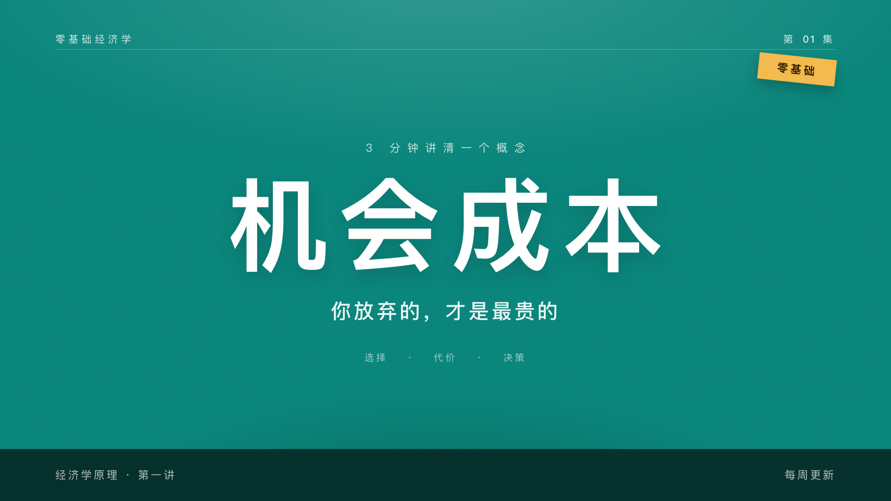
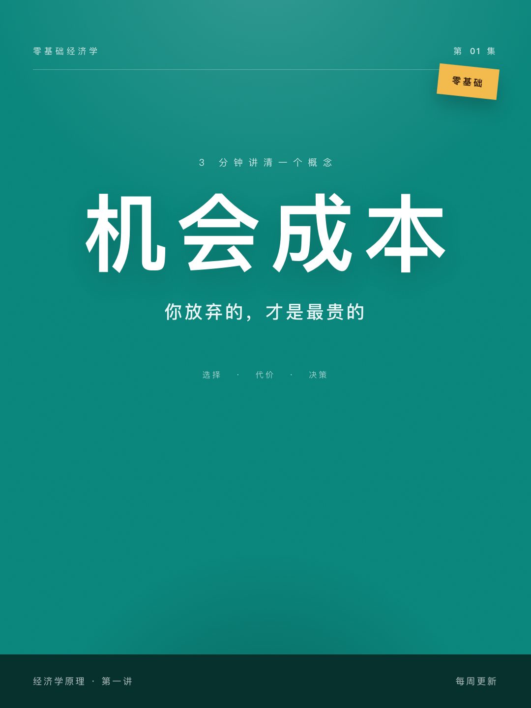
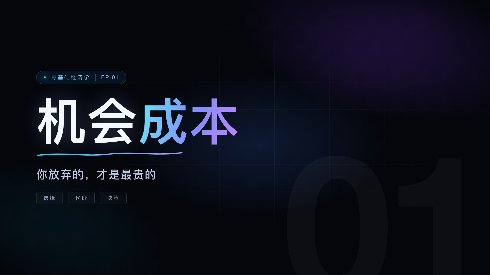
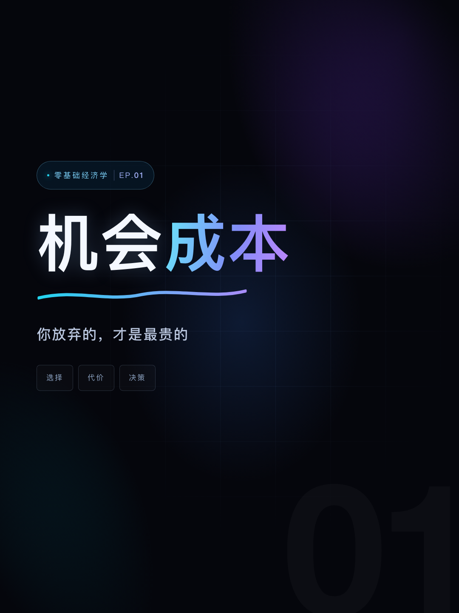
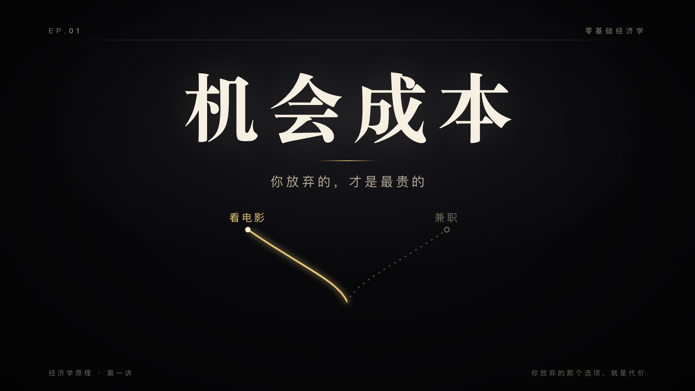
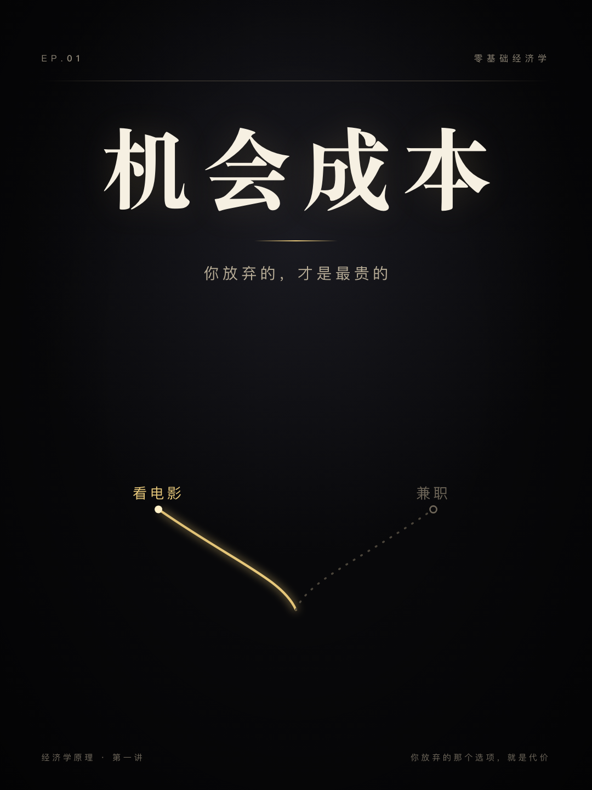
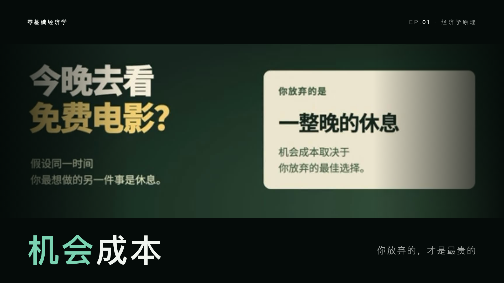
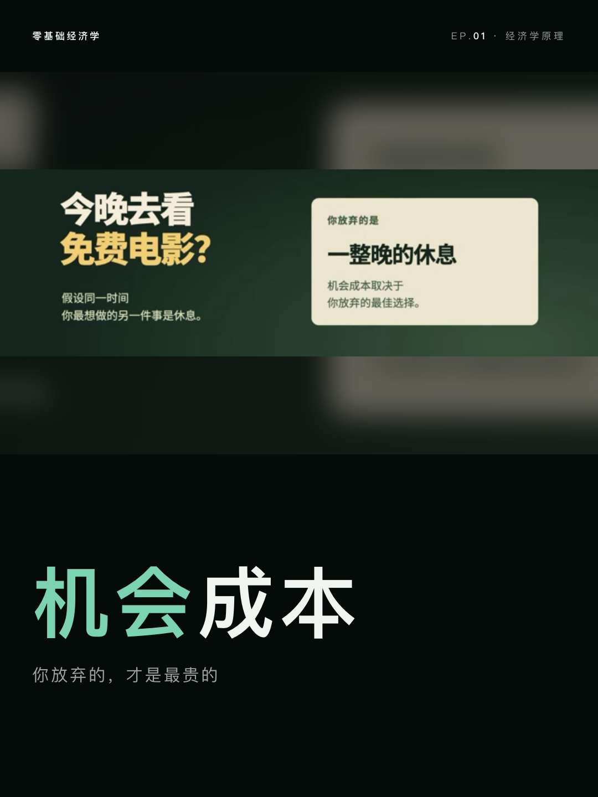
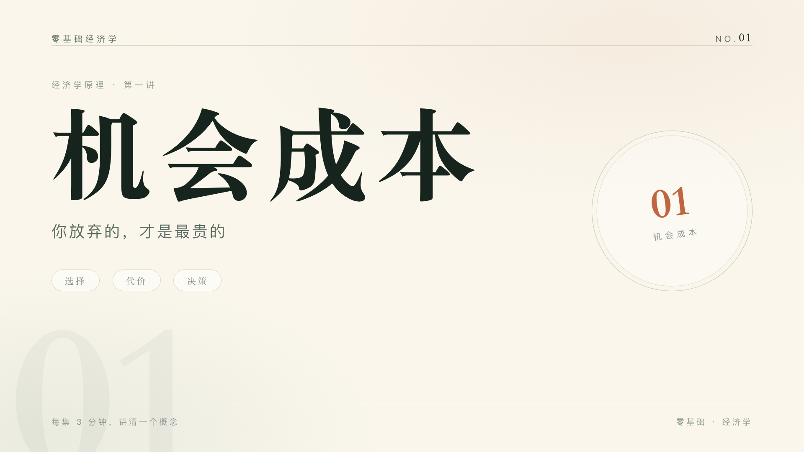
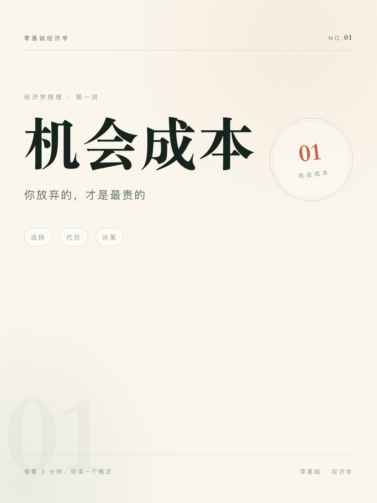

A简 · 色块最省事
一整块颜色、四五个字、一个角标。所有信息都在字上，不依赖任何素材。
- 成本
- 低，纯排版，一集 3 分钟
- 适合
- 概念讲解、清单、口播；周更以上
- 风险
- 密度低，全靠标题选得准；整季颜色定错会一直偏
同一集、同一段文字、同一个画幅，只换风格。先定这一张，后面所有集都按它排。 下面是五个方向，每个方向都已经写成模板：固定的位置固定，每集只换标题、钩子和图。选一个，之后就不该再换骨架。


一整块颜色、四五个字、一个角标。所有信息都在字上，不依赖任何素材。


深色底 + 渐变光 + 一个大字标题，关键词换色，下面一行钩子。信息流里最先被看到。


黑场 + 宋体大字 + 一张每集不同的概念图。像纪录片海报，收藏感最强。


直接取成片里的一帧，上下加两条固定信息条。人在画面里、画面本身够清楚时最划算。


米白纸面 + 宋体标题 + 一枚集数印章。在一排深色封面里反而显眼，像一本小册子。
不用凭感觉。按顺序答三个问题，基本只剩一个方向。
如果是零基础、要连更、画面靠图解：先按 C 做第一张，撑不住再退 A。
coverStyle 写进系列 Handbook，第二集起自动沿用。